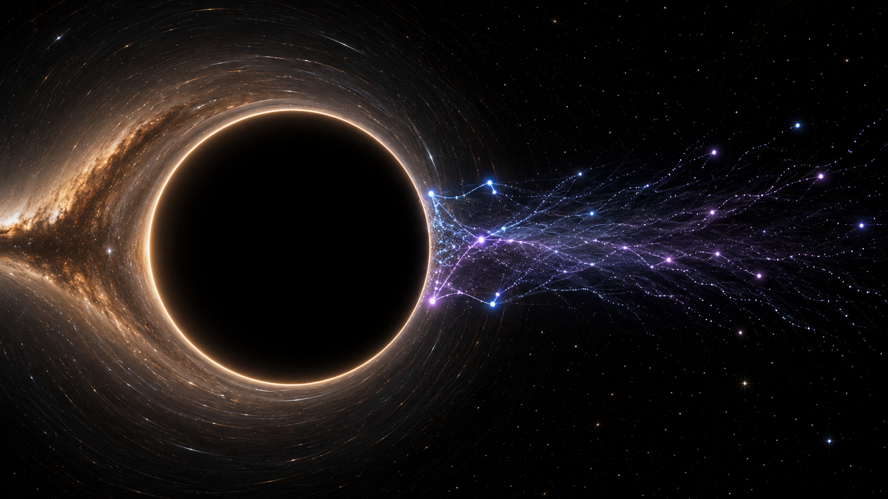

What is a black hole?
A black hole is a region of spacetime where gravity is so strong that nothing, not even light, can escape once it crosses a boundary called the event horizon. That sentence is correct, but it can still sound too much like a cosmic drain. A more careful description is that a black hole is what happens when mass-energy curves spacetime so intensely that the causal structure of the region changes.
If the Sun were somehow replaced by a black hole with the same mass, Earth would not suddenly get sucked in. Earth would continue orbiting almost exactly as before, because what matters for the orbit at that distance is the total mass. The real issue would be the disappearance of sunlight, heat, and most of the conditions we normally associate with survival. Minor inconvenience.
For a non-rotating black hole, \(r_s\) gives the event-horizon scale. Compress enough mass inside that radius and the escape speed exceeds \(c\).
Spacetime curvature: gravity as architecture
In the Newtonian picture, gravity is a force pulling objects toward one another. That description works brilliantly for many practical purposes. General relativity replaces it with something deeper: matter and energy curve spacetime, and free-falling objects move along the natural paths allowed by that curved geometry.
This is why black holes matter conceptually. They take the geometric view of gravity and turn the volume up until the room starts shaking. Near a black hole, “straight” and “future” are no longer the comfortable ideas they are in ordinary life.
Very loosely: geometry on the left, matter-energy on the right. Matter tells spacetime how to curve; curved spacetime tells matter how to move.
The event horizon and the weird honesty of time dilation
The event horizon is often called the point of no return. That phrase is memorable, but it can make the horizon sound like a physical wall. It is not a wall. It is a causal boundary. Nothing dramatic needs to happen locally at the horizon of a sufficiently massive black hole. What changes is the global structure of possible futures.
To a distant observer, an object falling toward the horizon appears to slow down, redden, and fade, because the light climbing out loses energy and takes longer to escape. To the infalling observer, their own clock continues normally. They do not experience their heartbeat as suddenly becoming ceremonial.
As \(r\) approaches \(r_s\), the delay seen by a distant observer grows dramatically. This simplified form applies outside a non-rotating black hole.
The singularity: where the equations stop pretending they are comfortable
In the classical description, the centre of a black hole contains a singularity: a place where curvature becomes infinite and the known mathematical description breaks down. Many popular summaries say this as if it were a photographed feature. It is not. A singularity is the place where the theory itself is telling us that something important is missing.
General relativity handles gravity beautifully on large scales. Quantum mechanics handles the microscopic world brilliantly. Near the singularity, both should matter, and we do not yet possess a complete, experimentally confirmed theory of quantum gravity.
The ergosphere and frame dragging: when spacetime itself gets dragged around
Real astrophysical black holes are expected to rotate. Once rotation enters the problem, the simple Schwarzschild picture is no longer enough. The Kerr solution describes rotating black holes, and rotation introduces frame dragging. In plain language: spacetime is not just curved, it is twisted by the black hole’s angular momentum.
Outside the horizon of a rotating black hole lies the ergosphere, a region where no observer can remain stationary with respect to distant stars. You can still escape the ergosphere if your trajectory is right, but you cannot simply hover there as if the geometry were politely waiting for you to make up your mind.
Here \(J\) is angular momentum. The parameter \(a_{\ast}\) expresses how rapidly the black hole rotates.
Hawking radiation: black holes are not perfectly black after all
Classical black holes only absorb. Quantum theory complicates that. Hawking radiation emerges from quantum field theory in curved spacetime and implies that black holes can emit thermal radiation. The common particle-pair explanation near the horizon is simplified, but it is useful as a way of visualising how the horizon and quantum vacuum fluctuations enter the story.
The remarkable part is that the temperature is inversely proportional to mass. Larger black holes are colder. Supermassive black holes are extraordinarily cold by this measure, which is why Hawking radiation is conceptually central but observationally elusive for ordinary astrophysical black holes.
Larger black holes are colder. For stellar-mass and supermassive black holes, this temperature is tiny.

Conceptual figure for Hawking radiation near the event horizon. This is an educational visual, not an observational image.
Hawking radiation also leads to the information paradox. If matter falls into a black hole and the black hole later evaporates into thermal-looking radiation, where does the information about the original state go? Quantum mechanics is not enthusiastic about information simply vanishing. Black holes therefore force gravity, thermodynamics, and quantum theory to argue in public.
Modern black-hole imaging: EHT, M87*, and why the image mattered
The Event Horizon Telescope did not photograph a singularity. It did not take a direct portrait of the horizon itself either. What it reconstructed was the emission structure around a supermassive black hole: a bright ring-like structure surrounding a dark central shadow.
The image was a triumph not only of astrophysics, but of instrumentation, calibration, signal processing, and global collaboration. Radio observatories across Earth were combined through very-long-baseline interferometry to synthesise an Earth-sized aperture. The final image was therefore both a scientific result and an engineering achievement.
Now open the lab
The main article intentionally stays lightweight. The separate simulator page has its own loading sequence: calibrating the event horizon, loading the accretion disk particles, applying lensing, enabling optional AGN-style jets, and then entering the black-hole lab. That makes the waiting feel deliberate rather than broken.
The simulator is educational rather than a full Kerr geodesic ray tracer, but it is designed to communicate the correct relationships: stronger spin changes disk motion, inclination changes what the disk looks like, lensing bends the visual field, and the photon sphere marks the ring-like structure around the shadow.
References
- Einstein, A. (1915). The field equations of gravitation.
- Schwarzschild, K. (1916). On the gravitational field of a mass point according to Einstein’s theory.
- Kerr, R. P. (1963). Gravitational field of a spinning mass as an example of algebraically special metrics.
- Hawking, S. W. (1975). Particle creation by black holes.
- Luminet, J.-P. (1979). Image of a spherical black hole with thin accretion disk.
- Event Horizon Telescope Collaboration (2019). First M87* Event Horizon Telescope Results.
- Event Horizon Telescope Collaboration (2022). First Sagittarius A* Event Horizon Telescope Results.
Comments & reactions
Comments are powered by GitHub Discussions through giscus. You can leave a question, correction, or reaction below.